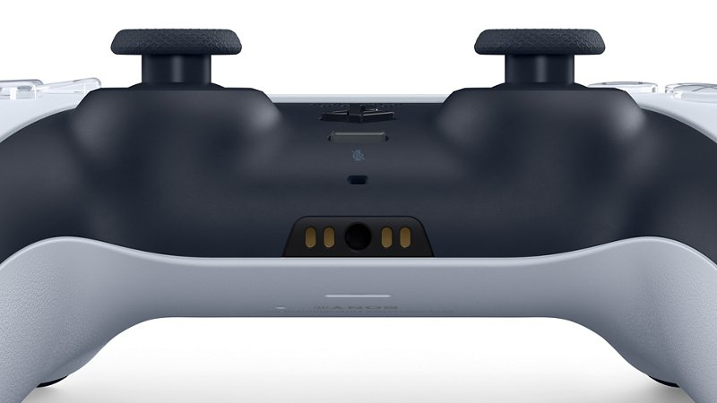
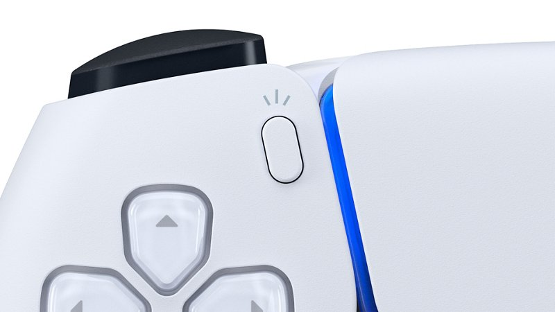
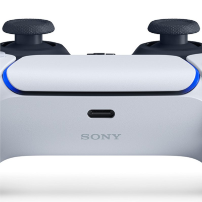
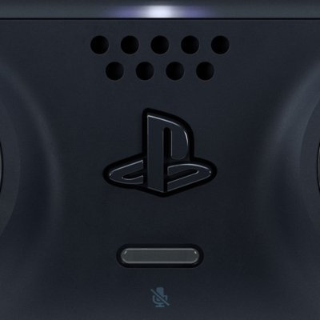
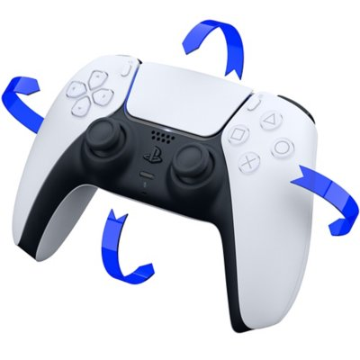

|
|
|
|
Адаптивные триггерыИспытайте реалистичные ощущения от взаимодействия с предметами и окружением в игре и благодаря разной степени усилия и сопротивления триггеров. Вы сможете реально почувствовать натяжение тетивы или удар по тормозам и полностью окунуться в действие игры. |
Тактильная отдачаПочувствуйте физическую отдачу в ответ на ваши действия в игре благодаря парным приводам, заместившим собой вибромоторчики. В ваших руках динамическая вибрация контроллера позволит симулировать широкий спектр ощущений — от окружения в игре до отдачи различных видов оружия. |
Подчеркните стиль своей приставки и играйте в большой компании с дополнительными беспроводными контроллерами DualSense.
Adaptive triggersExperience realistic sensations from interacting with objects and surroundings in the game and thanks to varying degrees of effort and resistance triggers. You will be able to really feel the tension of the bowstring or the impact on the brakes and fully immerse yourself in the action of the game. |
Haptic feedbackFeel the physical impact in response to your actions in the game thanks to the paired drive, which replaced the vibration motors. In your hands, the dynamic vibration of the controller will allow you to simulate a wide range of sensations - from the environment in the game to the recoil of various weapons. |
Emphasize the style of your console and play in a large company with additional DualSense wireless controllers.
|  |
Встроенный микрофон и разъем гарнитурыОбщайтесь с друзьями в чате благодаря встроенному микрофону либо подключив гарнитуру через разъем 3,5 мм. Легко отключайте микрофон с помощью специальной кнопки выключения звука. |
|  |
Кнопка созданияЗаписывайте самые эффектные игровые моменты и ведите стримы с помощью кнопки создания3. Опираясь на успех кнопки SHARE, кнопка создания предлагает игрокам еще больше возможностей для создания игрового контента и трансляции своих приключений в прямом эфире. |
|  |
Встроенная батареяЗаряжайте и играйте, теперь с помощью USB Type-C. |
|  |
Встроенный динамикНекоторые игры используют дополнительные возможности контроллера, добавляя еще один уровень восприятия благодаря звуковым эффектам высокой четкости. |
|  |
Датчик перемещенияВстроенный акселерометр и гироскоп обеспечивают интуитивно понятное управление движениями для поддерживаемых игр. |
Built-in microphone and headset jackChat with your friends thanks to the built-in microphone or by connecting a headset via a 3.5mm jack. Easily mute the microphone using the dedicated mute button. |
|
Create buttonRecord the most spectacular game moments and stream them using the create button. Building on the success of the SHARE button, the Create button offers players even more opportunities to create game content and broadcast their adventures live. |
Built-in batteryCharge and play, now with USB Type-C. |
|
Built-in speakerSome games use additional controller capabilities, adding another level of perception thanks to high-definition sound effects. |
|
Motion sensorThe built-in accelerometer and gyroscope provide intuitive motion control for supported games. |